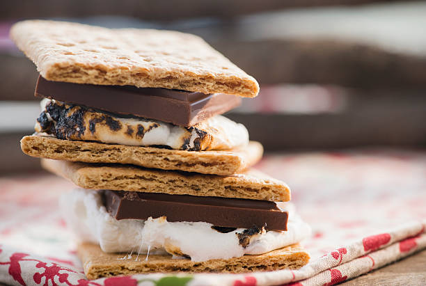

S'mores

Description
Crunchy crackers meet soft, sweet marshmallows, and they all come together in chocolate bliss. These melty mouth-watering smores will satisfy anyone's sweet tooth. Easy to whip up. Make them at your next get-together.
Ingredients
- 2 graham crackers
- 2 large marshmallows
- 1 HERSHEY'S Milk Chocolate Bar (1.55 oz)
Steps
- Center half of the chocolate bar on each of the 2 graham cracker halves.
- Place the remaining 2 graham cracker halves on a cookie sheet; top each with a marshmallow.
- On the middle rack, broil for 30 seconds or just until marshmallows are golden brown.
- Immediately invert onto chocolate-topped graham crackers; press gently.
- Let stand 1 minute to soften chocolate. Serve immediately